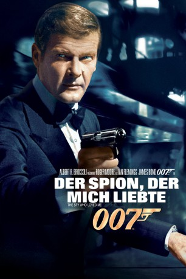
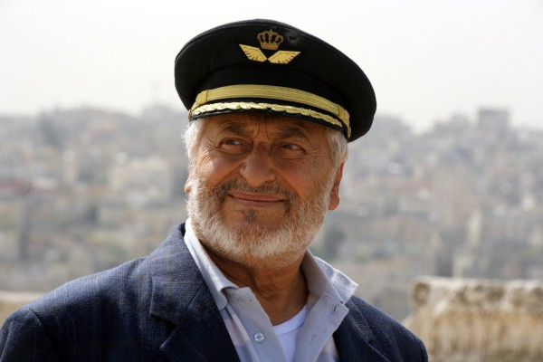
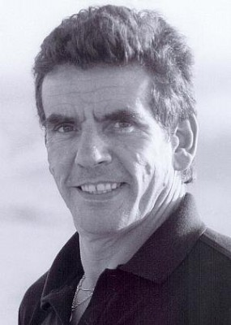
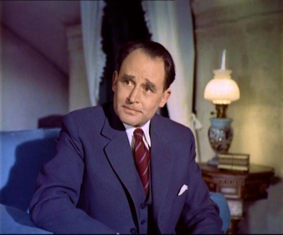

#264 James Bond 10 - Roger Moore - Der Spion, der mich liebte
Alternativ: The Spy Who Loved Me
Auszeichnungen: für 3 Oscars nominiert
 
 IMDB-Wertung: 7.1 / 10
IMDB-Wertung: 7.1 / 10  Metascore: 55
Metascore: 55 
Ein russisches und ein amerikanisches U-Boot mit Atomraketen an Bord verschwinden spurlos von der Bildfläche. Amerikaner und Russen beschuldigen sich gegenseitig. James Bond soll das Rätsel der verschwundenen U-Boote lösen. Aber auch der KGB hat schon einen Agenten losgeschickt.
Jahr: 1977
Dauer: 125 Minuten
FSK: 12
Land: England Studio: United ArtistsTonspuren: DTS - , DTS - ,
Untertitel: Deutsch, Englisch, Französisch, ,
Auflösung: 1080p (1920×816) Größe: 17408 MB
Genre: Action, Abenteuer, Thriller
Regisseur: Lewis Gilbert
Drehbuch: Christopher Wood, Richard Maibaum, Ian Fleming
Soundtrack: Marvin Hamlisch
Darsteller:
 Roger Moore als James Bond
Roger Moore als James Bond- Barbara Bach als Major Anya Amasova / Agent XXX
 Curd Jürgens als Karl Stromberg
Curd Jürgens als Karl Stromberg Richard Kiel als Jaws
Richard Kiel als Jaws- Caroline Munro als Naomi
 Walter Gotell als General Anatol Gogol
Walter Gotell als General Anatol Gogol Bernard Lee als M
Bernard Lee als M George Baker als Captain Benson
George Baker als Captain Benson Desmond Llewelyn als Q
Desmond Llewelyn als Q Vernon Dobtcheff als Max Kalba
Vernon Dobtcheff als Max Kalba Lois Maxwell als Miss Moneypenny
Lois Maxwell als Miss Moneypenny-  Nadim Sawalha als Aziz Fekkesh
 Robert Brown als Admiral Hargreaves
Robert Brown als Admiral Hargreaves Milton Reid als Sandor
Milton Reid als Sandor Albert Moses als Barman
Albert Moses als Barman Shane Rimmer als Commander Carter
Shane Rimmer als Commander Carter Nicholas Campbell als USS Wayne Crewman
Nicholas Campbell als USS Wayne Crewman- Anthony Forrest als USS Wayne Crewman
 Garrick Hagon als USS Wayne Crewman
Garrick Hagon als USS Wayne Crewman Kevin McNally als HMS Ranger Crewman
Kevin McNally als HMS Ranger Crewman Jeremy Bulloch als HMS Ranger Crewman
Jeremy Bulloch als HMS Ranger Crewman-  Roy Alon als Russian Sub Crewman , uncredited
 Robert Goodman als Stromberg's Guard , uncredited
Robert Goodman als Stromberg's Guard , uncredited- Nick Joseph als Armoury Officer , uncredited
- Paul Weston als Guard called on by Monorail Driver , uncredited
 Michael G. Wilson als Man in the Audience at the Pyramid Theatre , uncredited
Michael G. Wilson als Man in the Audience at the Pyramid Theatre , uncredited-  Geoffrey Keen als Sir Frederick Gray
- Michael Billington als Sergei Barsov
- Olga Bisera als Felicca
- Edward de Souza als Sheikh Hosein
 Valerie Leon als Hotel Receptionist
Valerie Leon als Hotel Receptionist- Sydney Tafler als Liparus Captain
- Sue Vanner als Log Cabin Girl
- Eva Reuber-Staier als Rubelvitch
- Marilyn Galsworthy als Stromberg's Assistant
 Cyril Shaps als Dr. Bechmann
Cyril Shaps als Dr. Bechmann- Milo Sperber als Prof. Markovitz
- Rafiq Anwar als Cairo Club Waiter
- Felicity York als Arab Beauty
- Dawn Rodrigues als Arab Beauty
- Anika Pavel als Arab Beauty
- Jill Goodall als Arab Beauty
- Bob Sherman als USS Wayne Crewman
- Doyle Richmond als USS Wayne Crewman
- Murray Salem als USS Wayne Crewman
- John Truscott als USS Wayne Crewman
- Peter Whitman als USS Wayne Crewman
- Ray Hassett als USS Wayne Crewman
- Vincent Marzello als USS Wayne Crewman
- Ray Evans als USS Wayne Crewman
Datei: X:\7+mehr(A-Z)\007 James Bond\James Bond 10 - Roger Moore - Der Spion, der mich liebte (1977, FSK12, 1920x816).mkv seit 15.02.2015
Festplatte: HD Collection-7+mehr(A-Z)+Person
 Es gibt insgesamt 28 Filme in der Gruppe '7+mehr(A-Z)\007 James Bond'
Es gibt insgesamt 28 Filme in der Gruppe '7+mehr(A-Z)\007 James Bond'